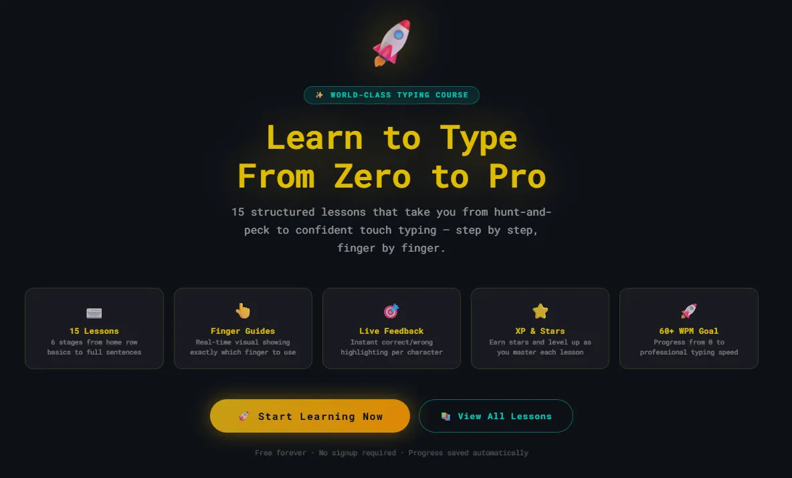
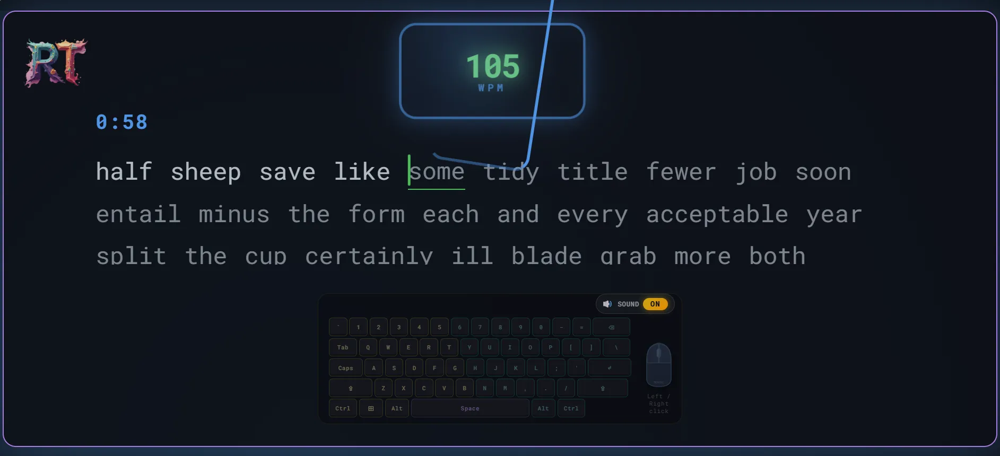
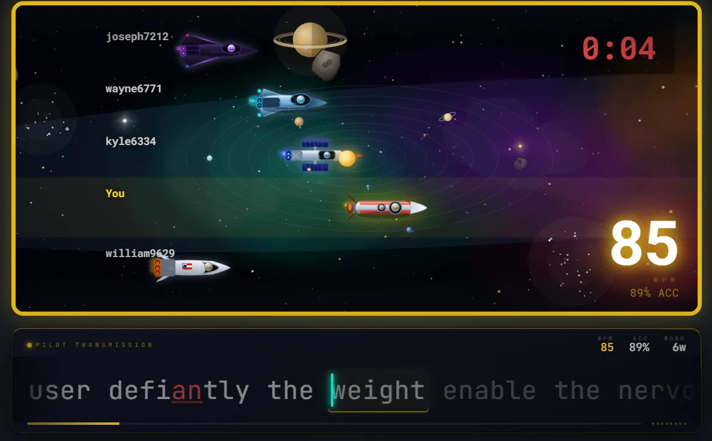
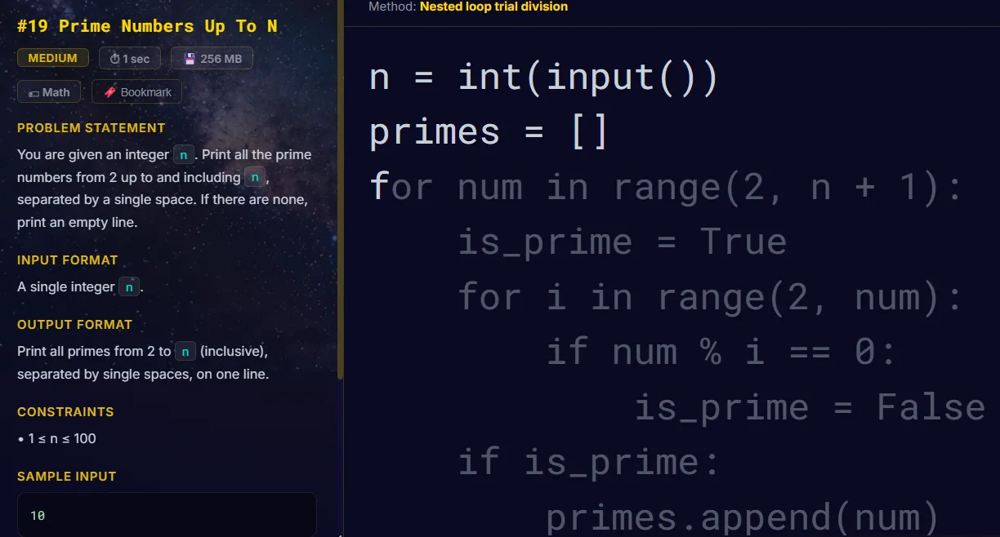

Where to Learn and Practice Typing Online
If you're learning touch typing, the first tool you choose matters less than the way you practice. Beginners need correct technique first, useful feedback second, and enough consistent practice to turn that technique into a reliable habit.
Online typing resources are useful for different reasons. Some teach finger placement, some measure WPM and accuracy, some make practice more engaging, and others focus on specialized skills such as programming. This guide explains where each type fits and how to build a simple routine that makes your practice more useful.
Where each type of typing resource fits
You do not necessarily need one website or one practice mode to handle everything. Different tools solve different problems. The most useful choice depends on whether you are learning touch typing for the first time, measuring existing speed, trying to stay motivated, or practicing for a specific type of work.
| Resource | Best for | Main purpose |
|---|---|---|
| Typing course | Complete beginners | Learning finger placement and touch-typing technique |
| Typing test | Measuring progress | Tracking WPM and accuracy under timed conditions |
| Typing games or races | People who want more variety | Making repeated practice more engaging |
| Code practice | Programmers and developers | Practicing programming symbols and syntax |
| Normal text practice | Intermediate typists | Building comfortable speed on realistic sentences |
What a good beginner typing course should actually teach
The biggest mistake beginners can make is focusing on speed before learning reliable technique. If you constantly look down at the keyboard or use the same few fingers for many different keys, simply taking more speed tests may reinforce those habits instead of correcting them.
A useful beginner course should introduce the keyboard progressively. It should start with the home row, explain which fingers control which keys, and gradually introduce the remaining letters, numbers, and punctuation. Visual guidance can make this easier because you can see which finger is expected to move before pressing a key.
Feedback is also important. A final WPM number tells you how quickly you performed, but it does not necessarily tell you what to fix. A good learning tool should help you identify mistakes while you practice so you can spend time working on the patterns that cause problems.
A structured typing course can remove some of the guesswork from deciding what to practice next. For example, the Rocket Typing learning course progresses through 15 lessons, beginning with home-row fundamentals and moving toward complete sentences with visual finger guidance.

How to practice so the skill actually sticks
Once you understand basic finger positions, improvement comes from regular, deliberate practice. A short session that you can repeat consistently is easier to maintain than an occasional long session for many learners.
Two measurements are especially useful: words per minute (WPM) and accuracy. WPM tells you how quickly you are typing, while accuracy tells you how reliably you are producing the intended text.
Looking at both numbers prevents you from treating a faster but much less accurate result as automatic progress. For example, a higher WPM accompanied by a substantial drop in accuracy may mean you are simply making more mistakes under pressure.
A useful target is to build speed while keeping accuracy reasonably stable. Once your technique becomes more comfortable, speed can gradually increase without deliberately sacrificing accuracy.
A short typing test can provide a convenient baseline. For meaningful comparisons, use similar test lengths and conditions rather than comparing every score as if the passages were identical.

A practical 15-minute typing routine
A useful practice session does not have to be long. The goal is to combine technique, deliberate practice, measurement, and review without allowing fatigue to take over.
- 2 minutes — warm up. Type simple text slowly and concentrate on relaxed hands and correct finger placement.
- 3 minutes — work on problem keys. Practice the letters, symbols, or combinations that caused repeated mistakes in previous sessions.
- 5 minutes — normal typing. Type realistic sentences at a comfortable pace while prioritizing accuracy.
- 3 minutes — timed practice. Take one or two short tests and record your WPM and accuracy.
- 2 minutes — review. Look at the mistakes you made and decide what to focus on next time.
The exact timing is flexible. The important part is having a repeatable routine rather than switching randomly between exercises every session.
Advertisement
How to tell whether your practice is working
A single typing score is not enough to judge improvement. Daily performance naturally changes depending on the text, your concentration, and how tired you are.
Instead, look for patterns over several sessions. If your typical WPM is gradually increasing while your accuracy stays similar, that is a useful sign of progress. If your WPM increases but accuracy consistently falls, slow down and concentrate on cleaner keystrokes.
It can also help to record your results periodically rather than becoming overly focused on every individual test. A simple record containing the date, WPM, accuracy, and one recurring problem can show which areas deserve more practice.
Why gamified practice can help with consistency
Repetitive drills can become boring, especially when you are practicing several times a week. When practice becomes unpleasant, maintaining a routine becomes harder.
Typing games and races provide a different environment. Scores, changing positions, and competition can make repeated typing more engaging. Their main benefit is usually motivational: an enjoyable practice format can make it easier to spend more time actually typing.
Games are best treated as a supplement rather than a replacement for technique-focused practice. Beginners still need to learn correct finger placement, and competitive sessions can encourage people to type faster than they comfortably can with good accuracy.
Once your basic technique is established, a typing race or game mode can add variety to a regular practice routine.

Typing for code is a different skill
General touch typing is useful for programmers, but typing code introduces patterns that ordinary prose practice does not emphasize. Programming involves parentheses, brackets, braces, quotation marks, underscores, operators, punctuation, numbers, and mixed-case identifiers.
Consider a line such as:
if (user_id == null) { return false; }
Someone who types prose quickly may still hesitate when producing the symbols and finger movements required by a line like this. The same applies to patterns such as:
array[i].push(value)
This is why programmers can benefit from spending some practice time on actual source code. The purpose is not to replace ordinary touch-typing practice, but to become more familiar with the punctuation and combinations that appear frequently in the languages you use.
If programming is your main use case, a code-specific typing practice mode can complement ordinary typing drills by putting those patterns directly into the practice material.

Choosing the right practice method for your goal
Your practice method should reflect what you actually want to improve. Someone learning touch typing from scratch needs different exercises from someone who already types comfortably but wants to improve speed.
| Your goal | Useful practice | What to focus on |
|---|---|---|
| Learn touch typing | Structured lessons | Finger placement and accurate keystrokes |
| Increase everyday speed | Normal text and timed tests | Consistent speed without sacrificing accuracy |
| Stay motivated | Typing games and races | Regular practice and comfortable competitive speed |
| Type code more comfortably | Code-specific exercises | Symbols, punctuation, operators, and syntax |
| Find weaknesses | Tests plus mistake review | Repeatedly missed keys and combinations |
Tips that help no matter which platform you use
- Warm up before a session. Start slowly and concentrate on relaxed hands and accurate keystrokes.
- Use comfortable posture. Keep your shoulders relaxed, avoid unnecessary wrist pressure, and position your screen so you can work without repeatedly bending your neck.
- Resist looking at the keyboard. Touch typing depends on building a reliable mental map of the keyboard.
- Prioritize accuracy while learning. Trying to maximize speed before your technique is stable can reinforce mistakes.
- Review your actual mistakes. If the same keys or combinations repeatedly cause errors, practice those patterns directly instead of repeatedly taking full tests.
- Take short breaks. If fatigue causes your accuracy to deteriorate, continuing to type may provide less useful practice.
How long should you practice typing?
There is no single practice duration that works for everyone. For many learners, a short daily session is easier to maintain than occasional marathon sessions.
Around 10–15 focused minutes is a reasonable starting point. If you are comfortable and still maintaining good accuracy, you can practice longer. If your accuracy starts falling because you are tired or distracted, taking a break is usually more useful than continuing purely to reach a longer session time.
Consistency also matters when evaluating progress. Compare results across multiple sessions instead of expecting every test to produce a new personal best.
A simple way to start
- Learn correct finger placement and become comfortable with the home row.
- Take a short typing test to establish your current WPM and accuracy.
- Practice for around 10–15 focused minutes on most days.
- Track accuracy alongside WPM instead of focusing on speed alone.
- Review your most common mistakes and practice those patterns directly.
- Add games or typing races when you want more variety or motivation.
- If you program regularly, add code-specific practice for symbols and syntax.
Frequently Asked Questions
Keep learning
Once you have a basic routine, these guides can help you work on specific aspects of typing:
- Complete Touch Typing Guide for Beginners — a detailed introduction to home-row technique and finger placement.
- Advanced Touch Typing Techniques — techniques such as finger economy, chunking, and rhythm practice.
- Best Keyboards for Typing — factors to consider when choosing hardware for regular typing.
- Best Keyboards for Programmers — keyboard considerations for programming and long coding sessions.
Why practicing in more than one format can help
Different typing exercises solve different problems. A structured course can establish correct technique. Timed tests provide a consistent way to measure performance. Games and races add variety and motivation. Targeted exercises can then address the keys, combinations, or symbols that continue to cause errors.
You do not need to use every available practice format. A simple combination that gives you instruction, deliberate practice, measurable feedback, and enough variety to maintain a routine is usually a better starting point.
Ready to put this into practice?
Start with the fundamentals, then use short typing tests to measure your progress and identify what to practice next.
Start Learning →